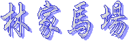
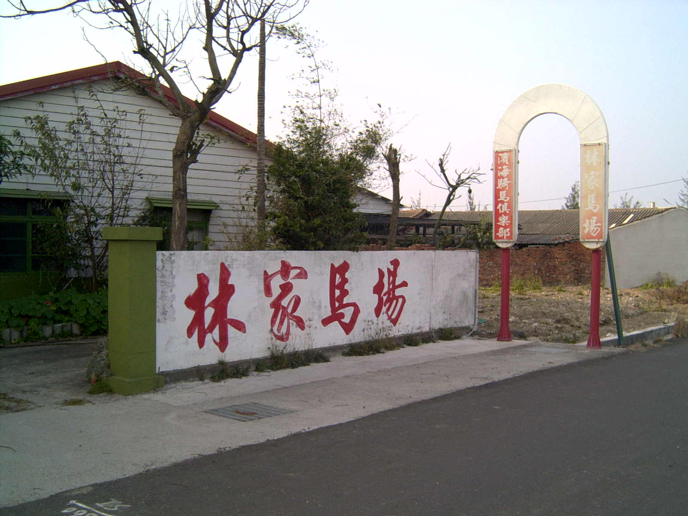
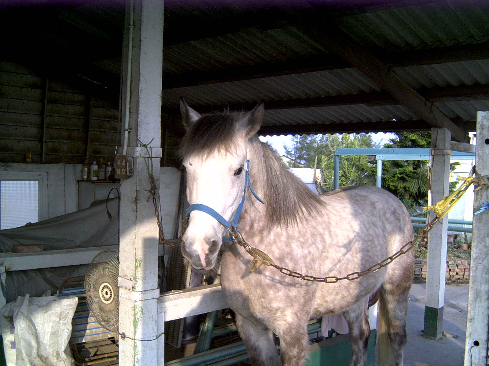
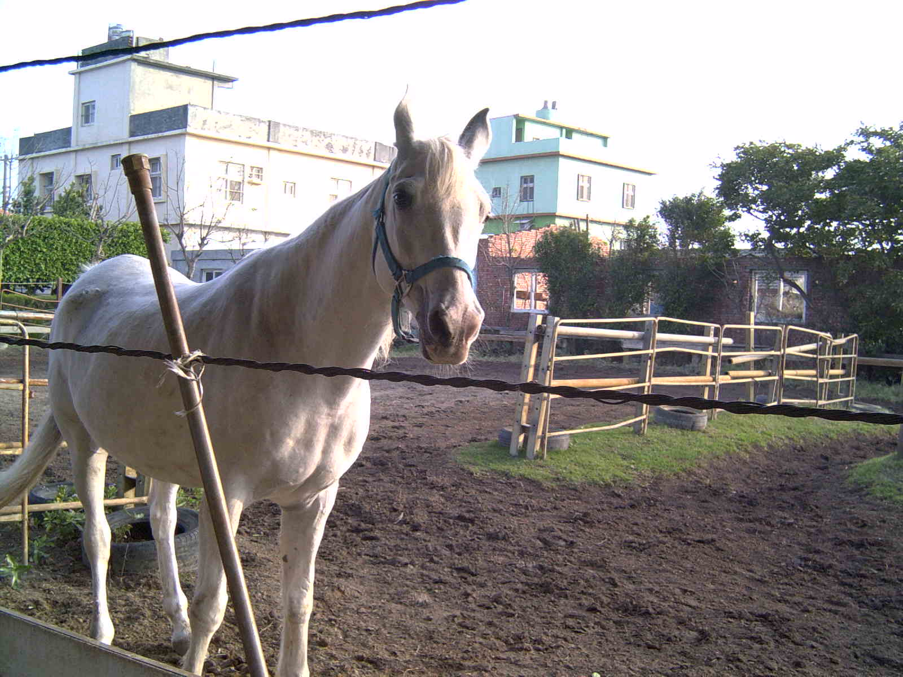
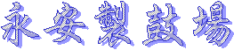
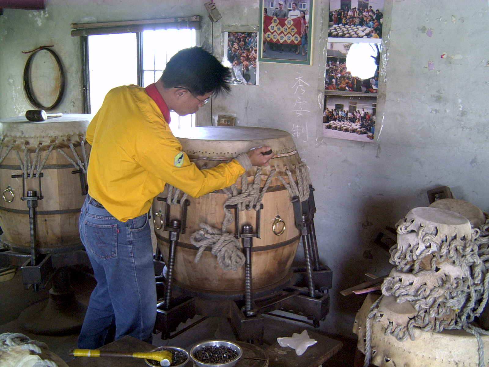
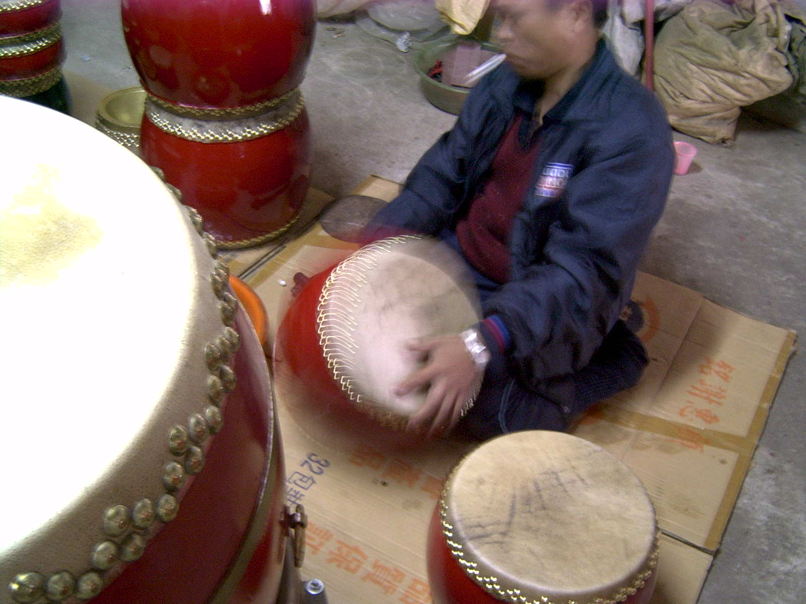
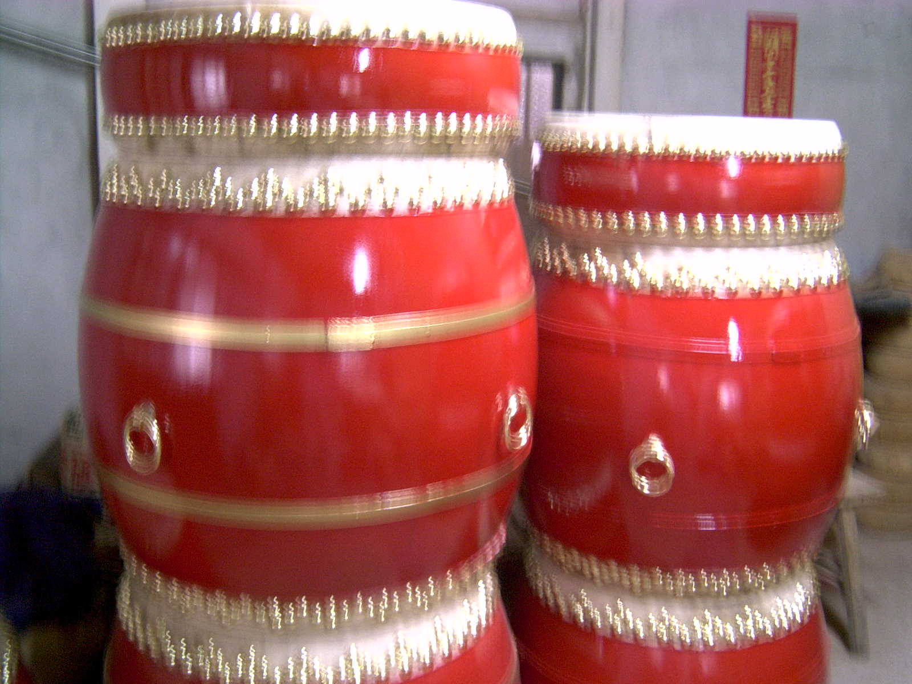
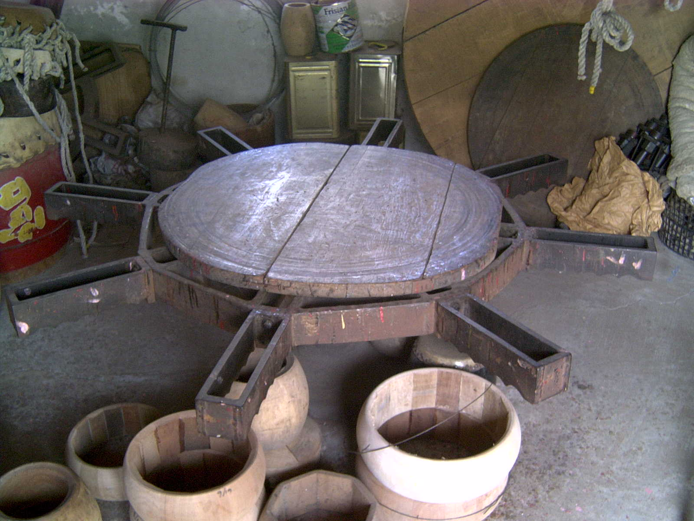
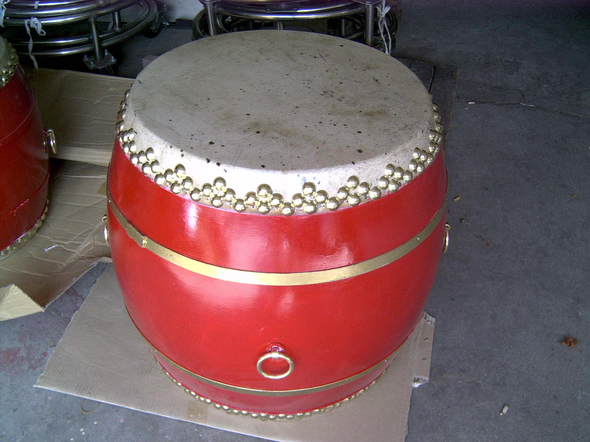

|
|
|

  Q1、請問你們開馬場開了多久？ A：從1988年開始到現在約15年。 Q2、請問你們一開始的馬如何引進？ A：一開始的馬是從外地買過來的。《澳洲、荷蘭和紐西蘭皆有從事賽馬活動》 Q3、請問現在你們的馬是以什麼種為主？ A：以阿拉伯馬為主。《阿拉伯馬：頭較小、較可愛、以繁殖為主。》 Q4、請問你們現在還有在做皮蛋嗎？ A：因為水資源汙染的問題《含有強鹼，排出會汙染》已經7、8年不做了！可是，現在有技術指導。 Q5、請問你們現在還有在做鹹鴨蛋嗎？ A：現在已經不賣了，可是現在要是有團體要求，可以做團體DIY。 Q6、馬蹄鐵： A：約40天要換一次。《西洋人認為用過的馬蹄鐵可以辟邪》 Q7、騎馬必備： A：韁繩、馬鞍；馬鞍有分汗墊和棉墊，汗墊可以吸收馬的汗，棉墊坐起來比較舒服。
Q8、馬的年齡：
 A：看馬的牙齒。 Q9、馬的身高： A：以掌計算。

  Q1、請問你們製鼓多久了？ A：大約50幾年了。 Q2、請問鼓分為幾種？ A：大約幾十多種，因為太多了實在無法細分。 Q3、請問一個鼓製作要花多少時間？ A：看大小而定，小的鼓約3到5天、中的鼓製作時間大致上和小的鼓差不多、大的鼓約7到10天。 Q4、請問你們製鼓的技術有可能傳授給外人嗎？ A：想傳給外人，但是外人都不太想學，因為太辛苦了。
Q5、請問什麼鼓最多人買？  A：兩呎大的鼓，大多是酬神廟會、舞龍舞獅…等用的，而它也是銷售量最好的鼓。 Q6、請問什麼鼓最特別？ A：十二呎的大鼓，需要4至6個大人抬。
1、鼓的製作過程是非常艱辛、複雜的《製作到完成，須100多個程序》，一開始進的牛皮是一幅血淋淋的畫面，因為那是剛從牛的身上扒下來的，所以牛皮上大多還殘留許多血漬，且血腥味很重。 2、鼓的音質好壞是依用途來區分，像是廟會的鼓，音質好壞不限制，只要可擊出聲音即可；而舞龍舞獅競賽用的鼓，除了要看舞得好不好外，更須聽鼓的音質，所以是非常強調鼓的材料。 3、鼓最怕碰到水了，像臺灣這種溼氣重的海島型氣候，保存鼓最好的方法就是保持乾燥，並適時於鼓面補充亮光油。
 1、永安製鼓社位於線西鄉的溝內村。 2、製作一面鼓需要：
材料一：水牛皮或黃牛皮。
 材料二：木桶。 材料三：鼓環。 材料四：鐵扣。 材料五：彎條。 材料六：鉛製鼓釘。 材料七：漆。 3、製鼓步驟 步驟一：削皮打洞穿繩。（厚度約1至16洞、大鼓要 24洞） 步驟二：扣鼓。 步驟三：繃鼓皮。 步驟四：裝彎條及木桶邊緣整理。 步驟五：製造鼓及上油漆。 步驟六：打桶釘及鼓面刷上金油。 4、 4、永安製鼓社的歷史：從40年代從彰化習師開始，到目 前約50多年。 5、鼓的特殊意義：鼓代表團隊合作及團隊精神。 6、 6、製鼓面臨的困境：(1)傳統材料來源難取得。(2)大 陸製品勞工便宜，進口造成衝突。(3)年輕人不想學 習製鼓。 7、製鼓摸皮適用哪一種動物的皮？
A：水牛或黃牛。 8、遠古時鼓皮是用？ A：鱷魚皮。 9、 9、廟裡的鼓力道較輕，所以皮的種類是黃牛皮；舞龍舞 獅的鼓力道較重，所以，皮的種類是水牛皮。 10、一般製鼓選擇製作鼓膜的皮是“愈薄愈好“。 11、牛皮買回來後的處理流程是： 依鼓身大小裁減。 →再用大約95 度的熱水燙過。 →撈出來放入冷水中，如此一來用刀就事半功倍了。 →生牛皮內面有一層厚厚的脂肪，所以要進行步驟。 → →牛皮要削的均勻而且厚度要在1公分左右，中間薄 而四周厚音色才會準確。 →削脂好的牛皮趁濕著先在鼓邊上用鐵製的副眼。 →以便串上麻繩在鼓桶上打洞。 →使鼓皮絞緊及成形。 →等正面曬乾後在反過來曬反面。 →等乾透之後鼓膜才算完成。 |